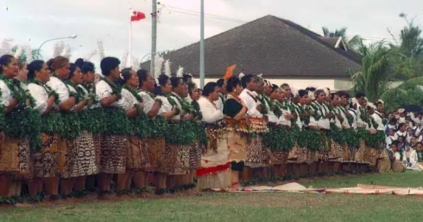
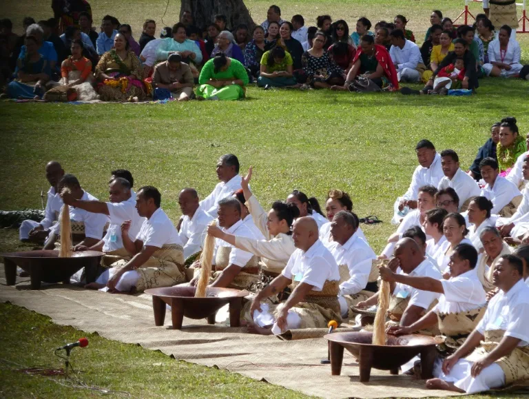
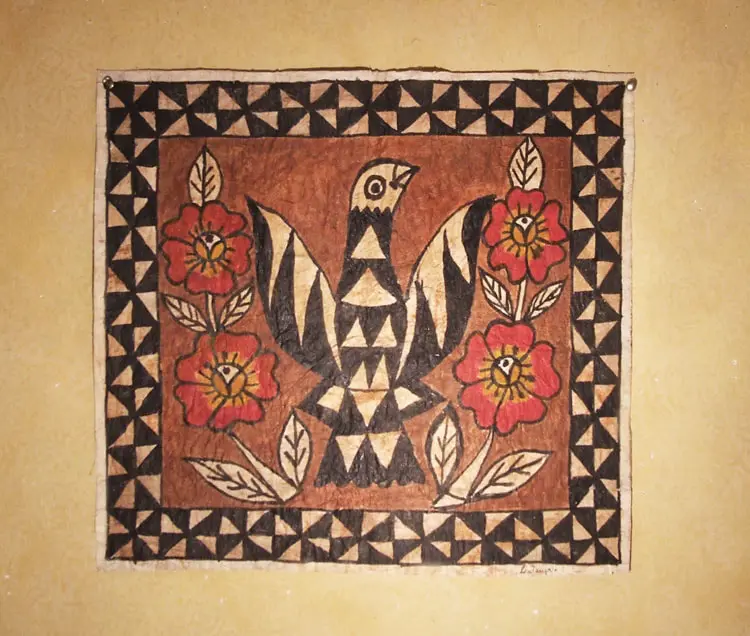
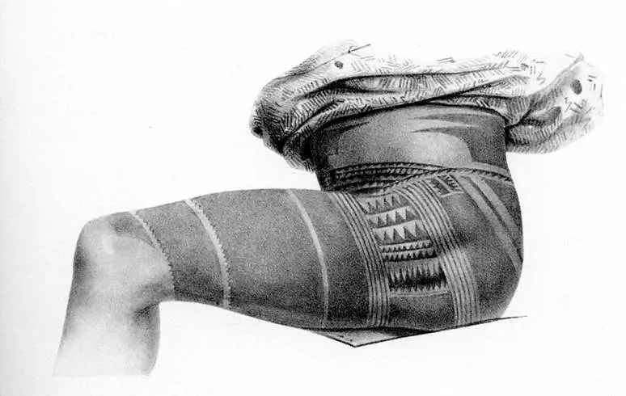

TONGAN CULTURES & TRADITIONS

TRADITIONAL LAKALAKA DANCE
Lakalaka is a traditional Tongan dance that combines singing, movement, poetry, and storytelling. It is often performed at important celebrations and represents Tongan history and culture.
Learn More -->
THE KAVA CEREMONY
The kava ceremony is a traditional gathering where Tongan people share kava while following cultural customs and showing respect. It brings families and communities together for important occasions.
Learn More -->
THE NGATU CLOTHING
Ngatu is a traditional Tongan tapa cloth made from the bark of the mulberry tree. It is used during important events and is valued as a symbol of Tongan heritage, family, and respect.
Learn More -->
TRADITIONAL TATAU/TATTOOS
Tatau is the traditional Tongan practice of tattooing, which has been passed down through generations. It represents identity, strength, heritage, and connection to Tongan culture.
Learn More -->